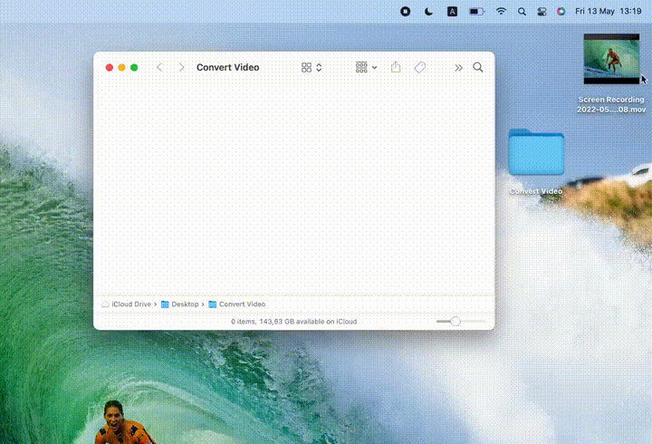
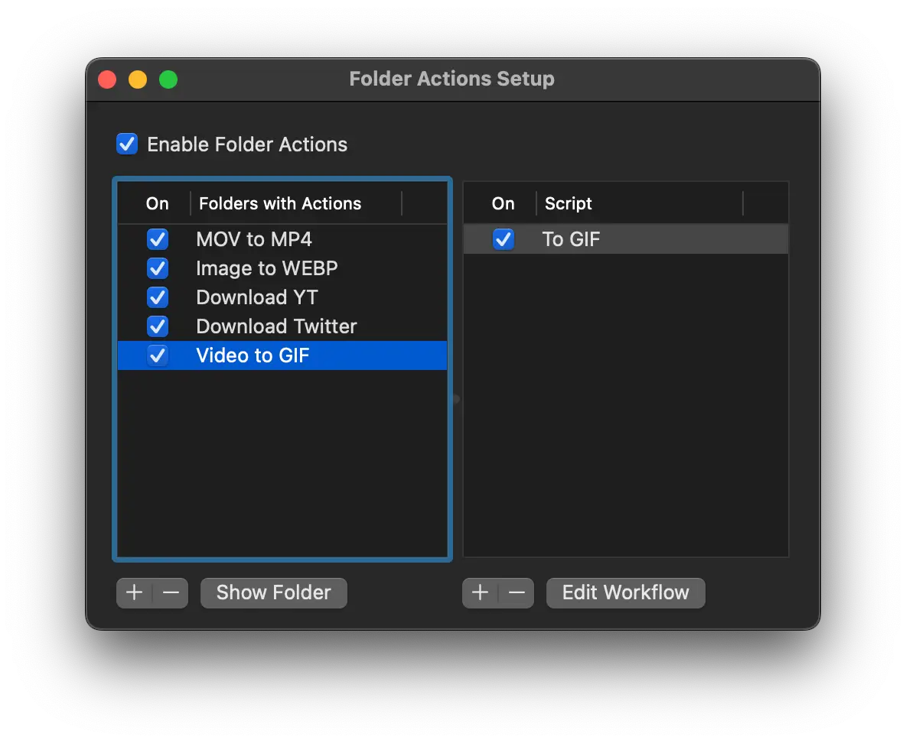
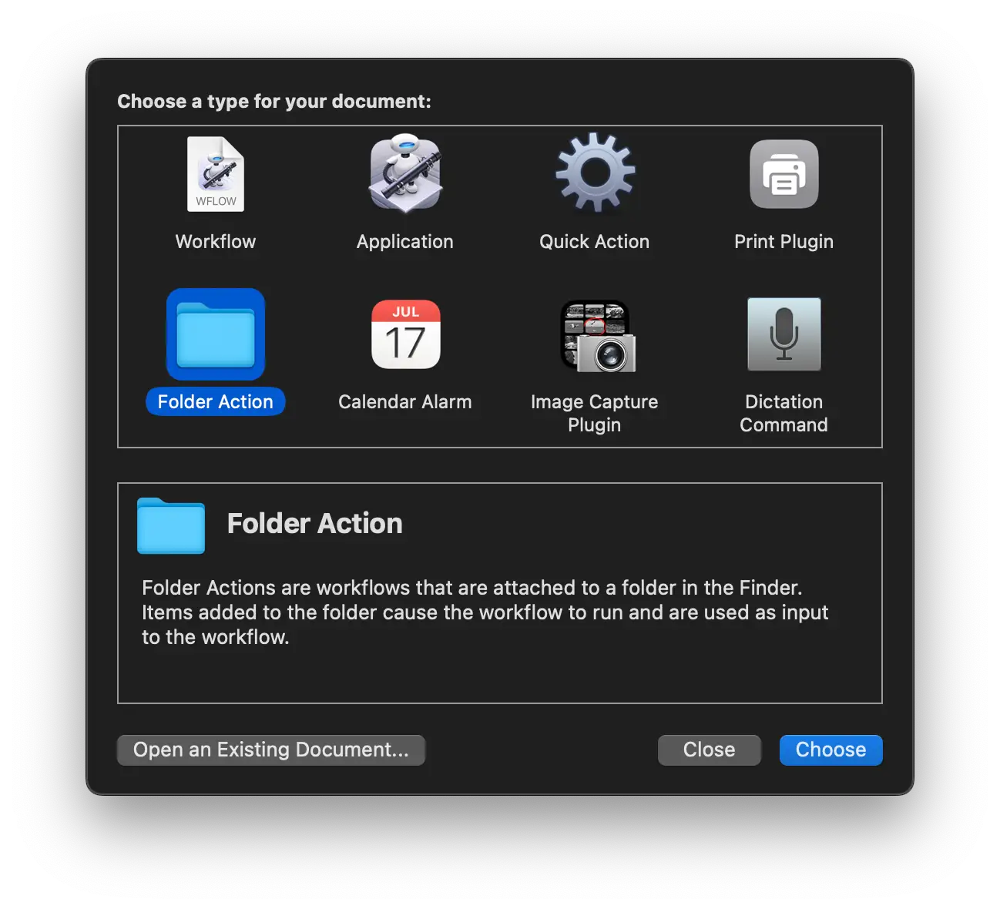
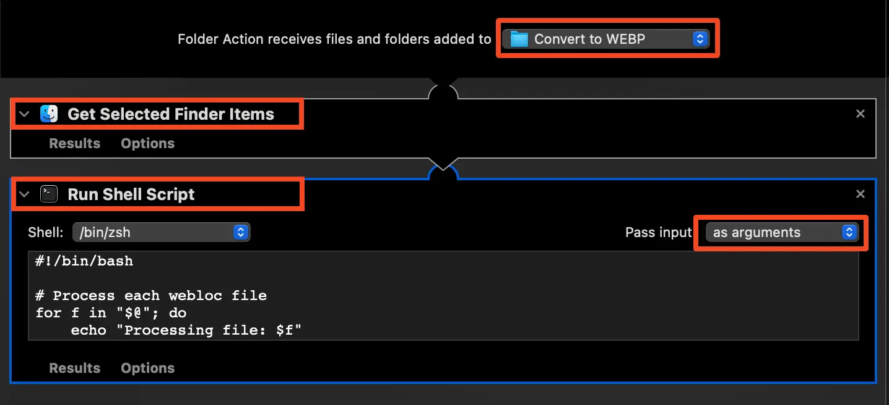
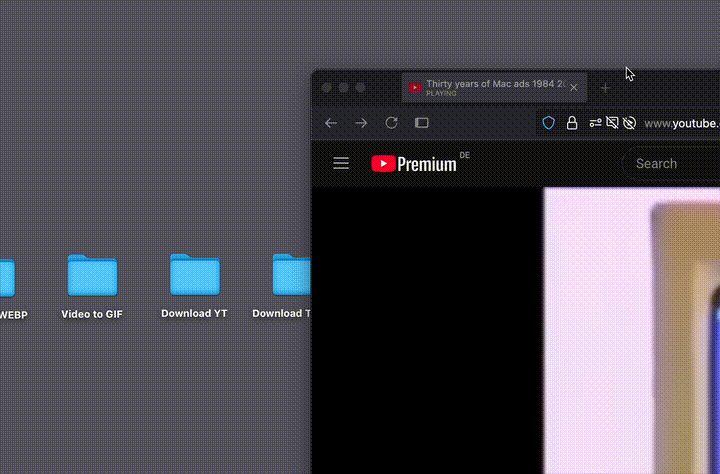
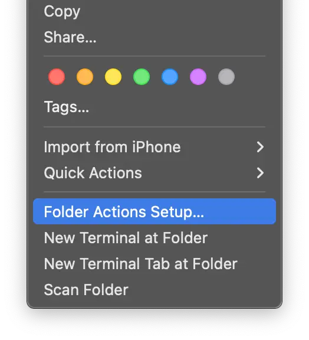
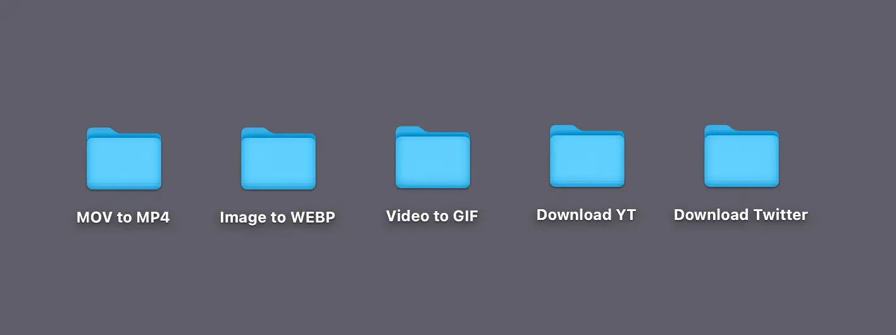

How I Automated My Computer Life With macOS Folder Actions
I’ve always believed that computers should handle repetitive tasks better than humans. It frustrates me when something can’t be automated the way I want or when simple actions require more effort than they should.
Let’s say we want to convert a video from one format to another. This often happens to me when I need to share a screencast video with colleagues on Slack. By default, macOS records in .MOV format, which is too large to share. Sometimes, I also have another file that I want to shrink for easier sharing in a message.
Previously, I used a macOS GUI app to convert in .MP4, and the steps from start to finish were:
- Open the video converter app
- Click a button to select a file
- Select the output format
- Click the “Convert” button, wait
- Close the video converter app
- Find and delete the original .MOV file manually
Such a simple need, yet so many manual actions were required.
So I realized that I could use the powerful macOS Folder Actions. I decided to use them as a trigger for my needs—any need. Set it up once, and then reuse it with just a drag and drop. Drop the file in, and the folder action trigger does the job.
Here’s a quick demo of how much easier converting .MOV files into .MP4 has become with drag and drop. Drop a file, wait, and it’s done. It’s pure magic!

And original file deleted automatically as well.
List of My Folder Actions
After some time, I created folder actions for various tasks.
Need to convert .JPG to .WEBP? I have a folder for that.
Need to download a Twitter video? I have a folder for that.

And it’s pretty easy to set up too.
How to Set Up macOS Folder Actions
Please note that once you set up Folder Actions, you can’t change the folder name without breaking the folder actions. If you rename the folder, you must reattach the folder actions again.
Steps:
- In Terminal:
brew install ffmpeg
- Create and name a folder.
- Open Automator and create a new Folder Action project. 
- Add Get Selected Finder Items and Run Shell Script. Change Pass input to “as arguments”. Select the folder. 
- To convert .MOV to .MP4, enter the following shell script (in all privided scripts you need to change file output path to yours):
for f in "$@"; do
/opt/homebrew/bin/ffmpeg -n -loglevel error -i "$f" -vcodec libx264 -crf 23 -preset ultrafast -tune film "/Users/alexander/Library/Mobile\ Documents/com\~apple\~CloudDocs/Downloads/$(date +"%Y_%m_%d_%I_%M_%p_%s").mp4";
rm -f "$f"
done
- Save and exit.
- Drag and drop a .MOV file into the folder. If it works, you should see gear icon in the menu bar. When it goes away - it means script is finished the task.
Additional Folder Actions
Convert Video to GIF
for f in "$@"; do
/opt/homebrew/bin/ffmpeg -n -loglevel error -i "$f" -vf "fps=18,scale=720:-1:flags=lanczos" "/Users/alexander/Library/Mobile Documents/com~apple~CloudDocs/Downloads/$(date +"%Y_%m_%d_%I_%M_%p_%s").gif";
rm -f "$f"
done
Convert Image to WEBP:
for f in "$@"; do
/opt/homebrew/bin/cwebp -q 70 "$f" -o "/Users/alexander/Library/Mobile Documents/com~apple~CloudDocs/Downloads/$(date +"%Y_%m_%d_%I_%M_%p_%s").webp";
rm -f "$f"
done
Download YouTube Videos:
- In Terminal:
brew install yt-dlp
- Use this script:
# Process each .webloc file
for f in "$@"; do
echo "Processing file: $f"
# Extract URL between <string> tags
url=$(grep -o '<string>.*</string>' "$f" | sed 's/<string>\(.*\)<\/string>/\1/')
echo "Extracted URL: $url"
# Check if URL was found
if [ -n "$url" ]; then
echo "Attempting to download from: $url"
# Download video using yt-dlp to the Downloads folder
/opt/homebrew/bin/yt-dlp -P "~/Downloads" "$url"
# Check if the download was successful
if [ $? -eq 0 ]; then
echo "Download successful, removing webloc file"
rm -f "$f"
else
echo "Download failed"
fi
else
echo "Error: No URL found in '$f'"
fi
done

- Drop a website URL directly into the folder.
Download Twitter Videos:
#!/bin/bash
# Process each .webloc file
for f in "$@"; do
echo "Processing file: $f"
# Extract URL between <string> tags
url=$(grep -o '<string>.*</string>' "$f" | sed 's/<string>\(.*\)<\/string>/\1/')
echo "Extracted URL: $url"
# Check if URL was found
if [ -n "$url" ]; then
echo "Attempting to download from: $url"
# Download video using yt-dlp to the Downloads folder
/opt/homebrew/bin/yt-dlp -P "~/Downloads" "$url"
# Check if the download was successful
if [ $? -eq 0 ]; then
echo "Download successful, removing webloc file"
rm -f "$f"
else
echo "Download failed"
fi
else
echo "Error: No URL found in '$f'"
fi
done
Folder Actions Tweaking
If you need to change a folder action, right-click on the folder and select Folder Action Setup. 
All saved actions are stored in:
Macintosh HD / Users / YourName / Library / Workflows / Applications / Folder Actions/
It’s become so powerful that I’m willing to extend this system to even more actions. Now my desktop is more useful than ever:
